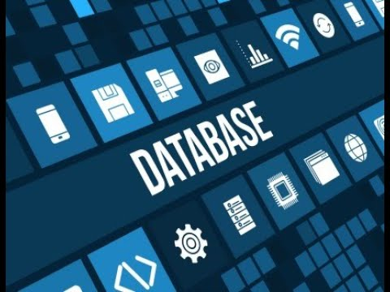

Base de datos definida
Una base de datos es una recopilación organizada de información o datos estructurados, que normalmente se almacena
de forma electrónica en un sistema informático. Normalmente, una base de datos está controlada por un sistema de
gestión de bases de datos (DBMS). En conjunto, los datos y el DBMS, junto con las aplicaciones asociadas a ellos,
reciben el nombre de sistema de bases de datos, abreviado normalmente a simplemente base de datos.
Los datos de los tipos más comunes de bases de datos en funcionamiento actualmente se suelen utilizar como estructuras
de filas y columnas en una serie de tablas para aumentar la eficacia del procesamiento y la consulta de datos. Así, se
puede acceder, gestionar, modificar, actualizar, controlar y organizar fácilmente los datos. La mayoría de las bases
de datos utilizan un lenguaje de consulta estructurada (SQL) para escribir y consultar datos.
¿Qué es el lenguaje de consulta estructurada (SQL)?
El SQL es un lenguaje de programación que utilizan casi todas las bases de datos relacionales para consultar,
manipular y definir los datos, además de para proporcionar control de acceso. El SQL se desarrolló por primera
vez en IBM en la década de 1970 con Oracle como uno de los principales contribuyentes, lo que dio lugar a la
implementación del estándar ANSI SQL. El SQL ha propiciado muchas ampliaciones de empresas como IBM, Oracle y
Microsoft. Aunque el SQL se sigue utilizando mucho hoy en día, están empezando a aparecer nuevos lenguajes de
programación.
Evolución de la base de datos
Las bases de datos han evolucionado drásticamente desde su inicio a principios de la década de 1960. Las bases
de datos de navegación, como la base de datos jerárquica (que se basaba en un modelo de árbol y permitía una
relación de uno a muchos) y la base de datos de red (un modelo más flexible que permitía relaciones múltiples),
eran los sistemas originales que se utilizaban para almacenar y manipular datos. Aunque eran sencillos, estos
primeros sistemas eran inflexibles. En la década de 1980, se hicieron populares las bases de datos relacionales,
seguidas de las bases de datos orientadas a objetos en la década de 1990. Más recientemente, las bases de datos
NoSQL surgieron como respuesta al crecimiento de Internet y la necesidad de acelerar la velocidad y el procesamiento
de los datos no estructurados. Hoy en día, las bases de datos en la nube y las bases de datos de autogestión están
abriendo nuevos horizontes en lo que respecta a la forma en la que se recopilan, se almacenan, se gestionan y se
utilizan los datos.
¿Cuál es la diferencia entre una base de datos y una hoja de cálculo?
Tanto las bases de datos como las hojas de cálculo (como Microsoft Excel) son modos cómodos de almacenar información.
Las principales diferencias entre los dos son:
Cómo se almacenan y se manipulan los datos
Quién puede acceder a los datos
Cuántos datos pueden almacenarse
Las hojas de cálculo se diseñaron originalmente para un usuario y sus características así lo reflejan. Son perfectas
para un único usuario o para un pequeño número de usuarios que no necesiten hacer una gran manipulación de datos
increíblemente complicada. Las bases de datos, por otro lado, están diseñadas para contener recopilaciones mucho más
grandes de información organizada, a veces en cantidades masivas. Las bases de datos permiten que muchos usuarios
accedan y consulten los datos de forma rápida y segura al mismo tiempo mediante una lógica y un lenguaje muy complejos.
Tipos de bases de datos
Existen muchos tipos diferentes de bases de datos. La mejor base de datos para una organización específica depende de
cómo pretenda la organización utilizar los datos.
Bases de datos relacionales
Las bases de datos relacionales se hicieron predominantes en la década de 1980. Los elementos de una base de datos
relacional se organizan como un conjunto de tablas con columnas y filas. La tecnología de bases de datos relacionales
proporciona la forma más eficiente y flexible de acceder a información estructurada.
Bases de datos orientadas a objetos
La información de una base de datos orientada a objetos se representa en forma de objetos, como en la programación orientada a objetos.
Bases de datos distribuidas
Una base de datos distribuida consta de dos o más archivos que se encuentran en sitios diferentes. La base de datos puede
almacenarse en varios ordenadores, ubicarse en la misma ubicación física o repartirse en diferentes redes.
Almacenes de datos
Un repositorio central de datos, un data warehouse es un tipo de base de datos diseñado específicamente para consultas y análisis rápidos.
Bases de datos NoSQL
Una base de datos NoSQL, o base de datos no relacional, permite almacenar y manipular datos no estructurados y semiestructurados
(a diferencia de una base de datos relacional, que define cómo se deben componer todos los datos insertados en la base de datos).
Las bases de datos NoSQL se hicieron populares a medida que las aplicaciones web se volvían más comunes y complejas.
Bases de datos orientadas a grafos
Una base de datos orientada a grafos almacena datos relacionados con entidades y las relaciones entre entidades.
Bases de datos OLTP.
Una base de datos OLTP es una base de datos rápida y analítica diseñada para que muchos usuarios
realicen un gran número de transacciones.
Estos son solo algunos de las varias docenas de tipos de bases de datos que se utilizan hoy en día. Otras bases de
datos menos comunes se adaptan a funciones científicas, financieras o de otro tipo muy específicas. Además de los diferentes
tipos de bases de datos, los cambios en los enfoques de desarrollo tecnológico y los avances considerables, como la nube y
la automatización, están impulsando a las bases de datos en direcciones completamente nuevas. Algunas de las bases de datos
más recientes incluyen
Bases de datos de código abierto
Un sistema de base de datos de código abierto es aquel cuyo código fuente es de código abierto; tales bases de datos pueden ser
bases de datos SQL o NoSQL.
Bases de datos en la nube
Una base de datos en la nube es una recopilación de datos, estructurados o no estructurados, que reside en una plataforma de cloud
computing privada, pública o híbrida. Existen dos tipos de modelos de bases de datos en la nube: el modelo tradicional y el de base
de datos como servicios (database as a service, DBaaS). Con DBaaS, un proveedor de servicios realiza las tareas administrativas y el
mantenimiento.
Base de datos multimodelo
Las bases de datos multimodelo combinan distintos tipos de modelos de bases de datos en un único servidor integrado. Esto significa
que pueden incorporar diferentes tipos de datos.
Bases de datos de documentos/JSON
Diseñadas para almacenar, recuperar y gestionar información orientada a los documentos, las bases de datos de documentos son una
forma moderna de almacenar los datos en formato JSON en lugar de hacerlo en filas y columnas.
Bases de datos de autogestión
El tipo de base de datos más nuevo e innovador, las bases de datos de autogestión (también conocidas como bases de datos autónomas)
están basadas en la nube y utilizan el machine learning para automatizar el ajuste de la base de datos, la seguridad, las copias de
seguridad, las actualizaciones y otras tareas de gestión rutinarias que tradicionalmente realizan los administradores de bases de datos.

¿Por qué aprender bases de datos hoy?
Big Data.
Qué se ocupa del manejo instantáneo y a largo plazo de grandes cantidades de datos generalmente resultado del
escalamiento en popularidad y uso de aplicaciones y plataformas.
Data Warehouse.
Es la disciplina que ayuda al correcto almacenamiento de grandes cantidades de datos históricas de
manera que permitan la futura explotación de manera que ofrezcan valor.
Data Mining.
Se encarga de extraer datos que se encuentren en diferentes fuentes y en diversos formatos y convertirlos
en información coherente y explotable y se vale de diversas técnicas como:
ETL (Extract Transform Load).
Extraer Transformar y Cargar es la técnica o mejor dicho serie de técnicas que se encargan
de tomar un origen de datos, hacerlo atravesar por un proceso y entregar la información en un formato diferente. Puede
ejecutarse en datos fríos como archivo muerto para data mining pero también se utiliza en tiempo semi-real para hacer data pipelines.
Business Intelligence.
Se enfoca en tomar información y agregarla en formatos que tengan sentido para las personas que
trabajan en una organización, especialmente aquellas encargadas de tomar decisiones, de manera que tengan la información
que necesitan en la mejor forma posible y de manera oportuna.
Machine Learning.
Suena muy complicado pero la realidad es que las herramientas que existen hoy en día quien tiene unos
fuertes cimientos en disciplinas de datos pueden hacer modelos que puedan ayudar a encontrar patrones efectivos. Existen
dos casos de uso muy claros, uno es clasificación de datos y el otro es predicción de comportamientos basado en entrenamiento
de datos históricos.
Data Science.
Los data scientists o científicos de datos son las personas que analizan las necesidades y retos de una
organización relacionadas con datos y desarrollan una estrategia juntando una o varias de las demás disciplinas y aplicarlas
efectivamente de manera que ayuden a resolverlas.